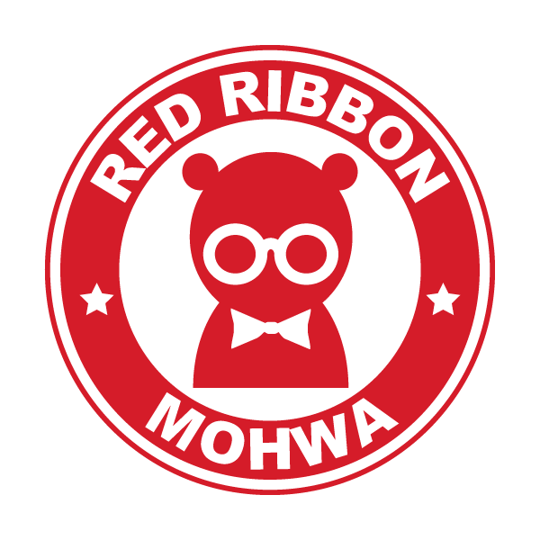

오늘의 주제
- 디자인 경량화란?
- 경량화의 필요성
- 반응형 예시
- Flat UI
- 반응형 웹의 종류
First Speaker
- 박일호
- a.k.a iMaZiNe
- Front-end Engineer / Design-gineer
- twitter : @imazine80
- facebook : imazine80
디자인 경량화란?
지속적인 사용자 경험을 바탕으로한
친절하고 겸손한 디자인 포인트
경량화의 필요성
- LTE? 네트웍은 아직 평등하지 않다
- 더욱 작아지는 Device
- 환경을 위할리가... LP!
반응형 예시
국내 사이트
해외 사이트
Issues
- 한글 폰트
- Image Quality
- 접근성
- 현실적 방법론?
Flat UI
- MS 의 Zune 에서 처음 채용된 것으로 알려져 있음
- iOS 이후 MertoUI 의 등장과 함께 뜨거운 감자로 부상
- Vector 기반의 장점을 그대로 웹에 적용할 수 있음
Vector 의 장점 ?
- 적은 용량으로 풍부한 표현이 가능
-
해상도와 크기에 영향이 없음
- Retina Display & Hdpi 대응
-
단순 구조 표현에 적합
- Gradation 외 색상표현의 자유도가 떨어짐
- CSS 구현상의 연구가 필요함
Font-icon
- Dingbat Font 라는 기술로 존재했음
-
21th 7. 12 - Say Hello Octicon 발표로 세간의 주목
- Cameron McEfee
- Jon Rohan
- unicode 의 사용자 정의 영역(0xE000 ~ 0xF8FF)사용 권장
Free Sites
Summary

FlatUI 는 반응형 디자인의 축복

Device / Browser 구현 가능성 고려
CanIUse 등 참고
IE & Android & more... BUT!
Webkit is just webkit
항상 모든 브라우저에 관심을...

오버하지 말자
- 무분별한 이미지
- 마구잡이 플러그인
- 배보다 큰 웹폰트
"Response"

Communication for Collaborators,
Make Collaboration
Next Speaker
- 전성균
- a.k.a Mohwa
- CarbonCode Front-end Engineer
- JavaScript로 돈벌고 싶었던,
10년자 Server-Side 개발자 - twitter : @yanione
- facebook : yanione
반응형 웹의 종류
Fluid Layout

Adaptive Layout

Viewport 란?


어떻게 적용하나?
Meta Tag
TIP!!
“user-scalable” 속성 값이 "yes" 인데 zoom in/out 가능?
Media Query
Media Query 란?
어떻게 적용하나?
link Tag
CSS Media Query
@media only screen
and (min-device-width : 320px)
and (max-device-width : 480px){
body{
background-color: green;
}
}
Respond.min.js
Css3-mediaqueries-js
한번 더 줄여보자!!
그밖의 최적화 기술들
- CSS Sprite
- Web-font
- Resource(JS, CSS) Combine 및 Minifier